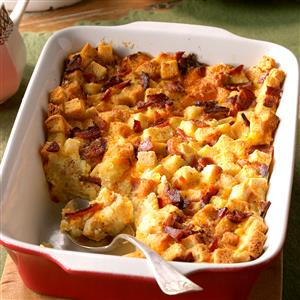

Easy Egg Recipe

Brunch Egg Casserole
Prep time
10 mins
bake time
1 hour
Total time
1 hour 10 mins
SERVES: 6
Ingredients
2 cups unseasoned stuffing cubes or croutons
1 cup shredded cheddar cheese
4 large eggs, lightly beaten
2 cups whole milk
1/2 teaspoon salt
1/2 teaspoon ground mustard
1/8 teaspoon onion powder
Dash pepper
4 bacon strips, chopped and partly cooked
Directions:
Preheat oven to 325°. Place croutons in a greased 11x7-in. baking dish; sprinkle with cheese. Combine eggs, milk and seasonings; pour into baking dish. Top with partly cooked bacon. Bake until bacon is crisp and a knife inserted in center comes out clean, 45-55 minutes. Yield: 6 servings.
Serve Hot. Enjoy!
NUTRITION
1 piece: 254 calories, 14g fat (7g saturated fat), 176mg cholesterol, 597mg sodium, 18g carbohydrate (5g sugars, 1g fiber), 14g protein.